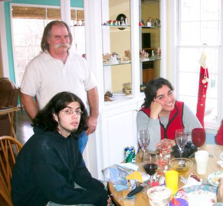

| Karen Eileen Greenfield was born January 1st 1955 in Fort Huachuca, Arizona to Ray and Sarah Greenfield. She married ? Ford and together they had three girls. Later she married Jim Bowling and they had a son, Ian. |
 Jim, Ian and Karen at Christmastime in 2002. |